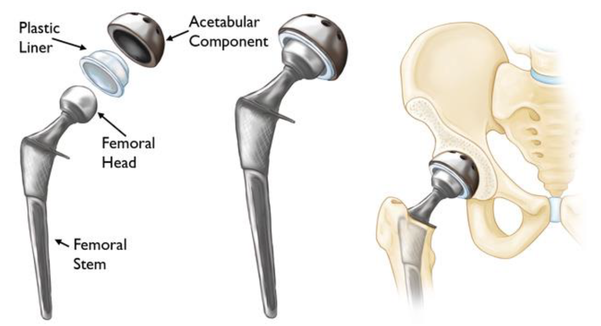
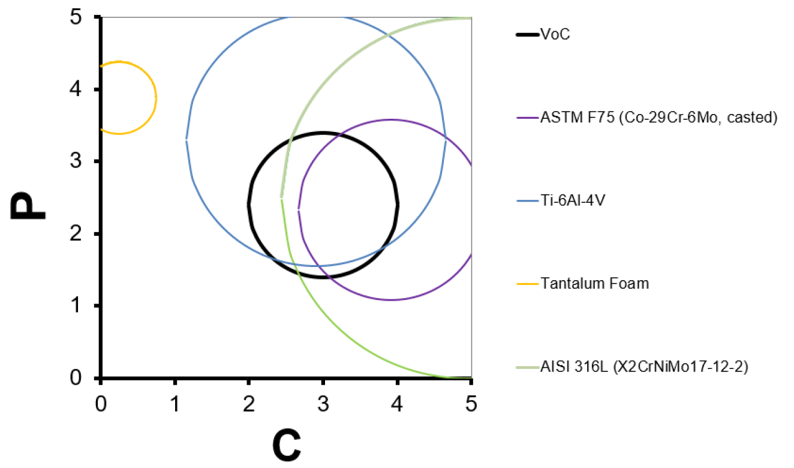
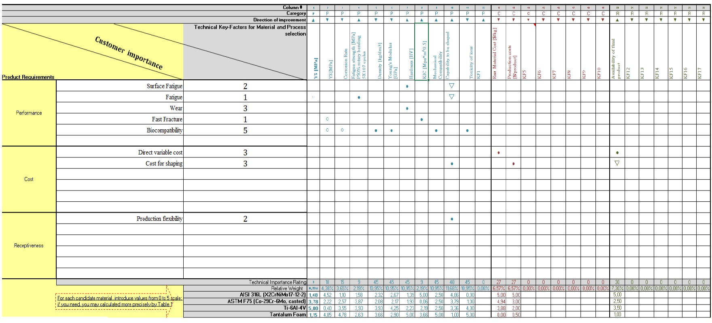

<div id="portfolio-page" class="portfolio-page-content">
    <div class="container">
        <div class="portfolio-nav">
            <div id="portfolio-close-button" class="portfolio-close-button">
                <a href="#portfolio"><i class="fa fa-close"></i></a>
            </div>
        </div>

        <div class="portfolio-title">
            <h1>Portfolio Project</h1>
        </div>

        <div class="row">
            <div class="col-sm-6 col-md-6 portfolio-block">
                <div class="owl-carousel portfolio-page-carousel">
                    <div class="item">
                        
                    </div>
                    <div class="item">
                        
                    </div>
                    <div class="item">
                        
                    </div>
                </div>

                <!-- <div class="portfolio-page-video embed-responsive embed-responsive-16by9">
                  <iframe class="embed-responsive-item" src="https://player.vimeo.com/video/97102654?autoplay=0"></iframe>
                </div> -->

                <!--
                <div class="portfolio-page-image">
                    
                </div>
                -->

                <script type="text/javascript">
                    jQuery(document).ready(function($){
                        $('.portfolio-page-carousel').owlCarousel({
                            smartSpeed:1200,
                            items: 1,
                            loop: true,
                            dots: true,
                            nav: true,
                            navText: false,
                            margin: 10
                        });
                    }); 
                </script>
            </div>

            <div class="col-sm-6 col-md-6 portfolio-block">
                <!-- Project Description -->
                <div class="block-title">
                    <h3>Material Selection for Hip Implant</h3>
                </div>
                <ul class="project-general-info">
                    <li><p><i class="fa fa-user"></i>Material Selection for Hip Implant</p></li>
                    <!-- <li><p><i class="fa fa-globe"></i> <a href="#" target="_blank">www.project-site.com</a></p></li> -->
                    <li><p><i class="fa fa-calendar"></i> Oct 2016 - Dec 2016</p></li>
                </ul>

                <p class="text-justify">Human joints are complex structures capable of functioning under severe conditions due to the combined efforts of articular cartilage, namely a load-bearing
                    connective tissue that covers bones, and synovial fluid, secreted within the joint area. Over the last decades, the growth in the longevity of the population has
                    led to a rapidly increasing necessity of surgical operations involving prosthesis implantation. Implants are medical devices manufactured to support, substitute or
                    enhance missing or damaged biological structures. They can be roughly categorized into groups by their application, like cardiovascular, orthopaedic, etc. Lately,
                    large achievements have been developed in total joint replacement procedures: by this technique, metal, ceramic or polymeric artificial materials replace the entire
                    load-bearing system. Indeed, although minor surgical treatments are done to provide temporary relief, the ultimate step is to substitute the dysfunctional joints
                    and reinforce the bones.
                    In this project, the hip implant was investigated by taking into account the femoral stem, femoral head, Plastic liner & Acetabular component. More specifically,
                    the selection of metals for these components is the primary objective of the study, the most used in history and a recent one are accounted for the evaluation.
                    Initially, based on the desired functionalities a set of criteria has been defined, specifically, focusing on the material properties with given high importance to the
                    Biocompatibility such as corrosion rate, Toxicity of metal ions. Secondarily, material strength characteristics such as Material wear, Fatigue were considered for
                    Steel alloys, Cobalt base alloys, Titanium alloys & Metallic foam. By considering these aspects into account, assessment has been carried out by employing a QFD4
                    Matrix.</p>
                <!-- /Project Description -->

                <!-- Technology -->
                <div class="tags-block">
                    <div class="block-title">
                        <h3>Keywords</h3>
                    </div>
                    <ul class="tags">
                        <li><a>Human Joints</a></li>
                        <li><a>Load Bearing Connective Tissue</a></li>
                        <li><a>Prosthesis</a></li>
                        <li><a>Titanium</a></li>
                        <li><a>Tantalum</a></li>
                        <li><a>QFD4 Matrix</a></li>
                        <li><a>Biocompatibility</a></li>
                    </ul>
                </div>
                <!-- /Technology -->

                <!-- Share Buttons -->
                <!-- <div class="btn-group share-buttons">
                    <div class="block-title">
                        <h3>Share</h3>
                    </div>
                    <a href="#" target="_blank" class="btn"><i class="fa fa-facebook"></i> </a>
                    <a href="#" target="_blank" class="btn"><i class="fa fa-twitter"></i> </a>
                    <a href="#" target="_blank" class="btn"><i class="fa fa-dribbble"></i> </a>
                </div> -->
                <!-- /Share Buttons -->
            </div>
        </div>
    </div>
</div>
